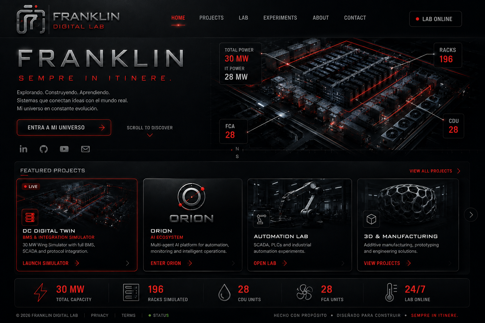

LIVE
DC DIGITAL TWIN
BMS & INTEGRATION SIMULATOR
30 MW Wing Simulator con BMS, SCADA y protocol integration.
LAUNCH SIMULATOR →FRANKLIN SANDOVAL
SEMPRE IN ITINERE.
Explorando. Construyendo. Aprendiendo.
Sistemas que conectan ideas con el mundo real.
Mi universo en constante evolución.

BMS & INTEGRATION SIMULATOR
30 MW Wing Simulator con BMS, SCADA y protocol integration.
LAUNCH SIMULATOR →AI ECOSYSTEM
Plataforma multiagente para automatización, análisis, monitoreo y operaciones inteligentes.
ENTER ORION →SCADA / PLC / CONTROLS
Laboratorio de automatización industrial, control, PLCs, SCADA y protocolos.
OPEN LAB →ADDITIVE SYSTEMS
Diseño, impresión 3D, prototipado y soluciones de manufactura.
VIEW PROJECTS →Este sitio funciona como showroom vivo de proyectos personales en ingeniería, IA, automatización, digital twins, infraestructura crítica y manufactura. El CV existe, pero aquí mandan los sistemas.